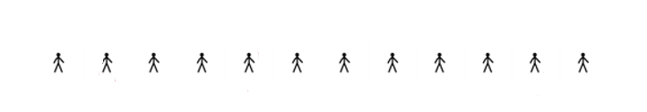
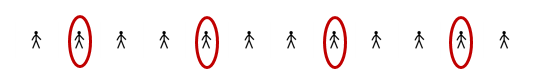
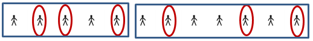
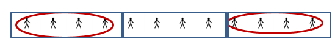
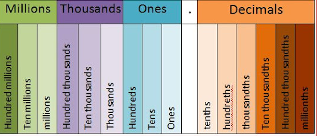

Survival Words
Purpose:
We are often familiar with a word, even if we cannot define it specifically. Rating word familiarity and discussing meanings with a partner will help us explore and expand our mathematical vocabulary.
Instructions:
- Fill out the table below individually, rating your familiarity with each word and describing any meaning you already associate with it.
A. I’ve never seen the word before.
B. I’ve seen the word, but I don’t use it.
C. I know the meaning, but I don’t use the word.
D. I know the meaning and I use the word.
- Meet with your partner and discuss your individual ratings and associated meanings.
- Write down the mathematical meaning of each word.
- Discuss with your partner how the mathematical meaning differs from what you previously thought. Write down helpful information to aid in understanding each word and concept as it pertains to Statistics.
| Survival Word | A | B | C | D | What I associate with this word | Mathematical meaning | Helpful information |
|---|---|---|---|---|---|---|---|
| Population |
|||||||
| Sample |
|||||||
| Mean |
|||||||
| Standard Deviation |
|||||||
| Outlier |
|||||||
1.1 Data and Statistical Literacy
Data (or a dataset)
is a collection of observations, measurements or reports.Statistics
is the study or process of dealing with dataPopulation
Census
is an attempt to gather information about every member or a populationParameter
Activity: U.S. Census
Go to the Census home page
- What is the current U.S. population? (Scroll down. Population Clock is on the left side.)
336,425,212 as of May 13, 2024 - Click on the Visit Population Clock Data. Type P1 into the search box. Click VIEW ALL MAPS. Click P1 and then the state of Tennessee in the map and then View Profile.
- What was the population of Tennessee in 2020?
6,910,840 - Which is higher for Tennessee, the percent under age 18 or the percent 65 or over?
Under age 18 at 21.8% is a higher percentage than 17.3% age 65 or over - What percentage of Tennessee’s population has access to broadband internet?
85.7% - What percentage of Tennessee’s population has a Bachelor’s degree or higher?
29.7%
- What was the population of Tennessee in 2020?
- Select another state and compare the demographics of it to Tennessee. Explain in writing at least 3 similarities or differences.
-
How Teens and Parents Approach Screen Time
STUDY
Today’s teenagers are more digitally connected than ever. Most have access to smartphones and use social media, and nearly half say they are online almost constantly. But how are young people navigating this “always on” environment? To better understand their experiences, we surveyed both teens and parents on a range of screen time-related topics. Our questions explored the emotions teens tie to their devices, the impact of smartphones on youth, and the challenges parents face when raising children in the digital age. 72% of U.S. teens say they often or sometimes feel peaceful when they don’t have their smartphone; 44% say it makes them feel anxious. This Pew Research Center survey of 1,453 U.S. teens ages 13 to 17 and their parents was conducted Sept. 26-Oct. 23, 2023. The analysis in this report is based on a self-administered web survey conducted from Sept. 26 to Oct. 23, 2023, among a sample of 1,453 dyads, with each dyad (or pair) comprised of one U.S. teen ages 13 to 17 and one parent per teen.
WHAT YOU KNOW
Population
Sample
Type of Study
EVIDENCE FOR HOW YOU KNOW IT
- Americans’ Views of U.S. Institutions
STUDY
Americans overwhelmingly see small businesses as having a positive effect on the way things are going in the country. By contrast, their views of large corporations are broadly negative. Most people – including identical shares in both parties – also are critical of the impact of banks and financial institutions. A new national survey conducted by Pew Research Center from Jan. 16 to Jan. 21 among 5,140 adults also finds: The U.S. military is viewed positively by 60% of Americans, and these views are similar across most demographic and political groups. About three-quarters of Democrats and Democratic-leaning independents view colleges and universities positively, but only about three-in-ten Republicans and Republican leaners give these institutions positive marks. Nearly three-quarters of Republicans (73%) say churches and religious institutions have a positive impact. Democrats’ opinions are more divided: 45% say their effect is positive, 53% say it is negative.
WHAT YOU KNOW
Population
Sample
Type of Study
EVIDENCE FOR HOW YOU KNOW IT
- Explain why the following sample might be flawed or biased.
The campus food service wants to know how students feel about their food. They hand out a survey during Friday morning breakfast between 7 a.m. and 9 a.m.
- Select an alternative method for choosing a more representative sample.
- On May 21, 2020 at 1:10 pm, the world’s population was 7,785,995,245.
- Round the population to the nearest billion.
8,000,000,000 - Round the population to the nearest thousand.
8,046,639,000 - Round the population to the nearest hundred.
8,046,639,300
- Round the population to the nearest billion.
- Unless otherwise specified, statistics should be rounded to one more decimal place than the sample data.
- Find the average (arithmetic mean – usually referred to as just “the mean”) of three exam scores: 75, 86, and 92. Round the mean of the exam scores to the tenths place (one decimal place).
(75+86+92)/3=84.3 - Find the mean height of four college students whose heights without shoes are measured as 157.5 cm, 180.3 cm, 167.9 cm, and 186.2 cm. Round the mean height of the college students to the hundredths place (two decimal places).
(157.5 + 180.3 + 167.9 + 186.2)/4=172.98 cm
- Find the average (arithmetic mean – usually referred to as just “the mean”) of three exam scores: 75, 86, and 92. Round the mean of the exam scores to the tenths place (one decimal place).
- Given the number 538.47962
- Round to the tenths place
538.5 people - round to four decimal places
538.4796 people - Round to the hundredths place
538.48 people - round to three decimal places
538.480 people - Round to the nearest whole number
538 people - If you calculated that you need to survey at least 538.47962 people to be confident in the survey results, how many people should you survey?
539 people
- Round to the tenths place
- In the Fall 2023 semester, there were 8710 enrolled students at Pellissippi State. Of those, 2026 were first-time freshmen. What percentage of the PSCC students were first-time freshmen in Fall 2023?
- A fraction like 2026/8710 means to divide 2026 ÷8710.
- Percent literally means “for every 100.” To write a decimal in percent form, multiply the decimal by 100.
\(\frac{2026}{8710}=0.2326\\0.2326(100)=23.26\%\)
- In Fall 2023, 10746 applicants were admitted to Pellissippi State. However, only 44.2% of those students registered for classes. How many of the applicants in Fall 2023 registered for classes?
- Divide a percentage by 100 to write as a real number.
- Multiply the real number in decimal form by the total to calculate the percentage.
\(\frac{44.2}{100}=.442\)
\(.442(10746)=4750\) applicants registered for classes
-
Write the following percentages as real numbers in decimal form.
- 37%
0.37 - 8%
0.08 - 52.9%
0.529
- 37%
- You plan a birthday celebration for your friend at the Tomato Head restaurant in Market Square. Since it’s a large group of people at the party, the Tomato Head automatically adds a 22% gratuity to the bill. If you order $245 worth of pizza and drinks, what will be the total bill amount with tip?
(0.22)(245)+245 = $298.90 - 13. Electrical Construction is a growing program at Pellissippi State. In 2022-2023, there were 1620 total Pellissippi State graduates, and 66 of them graduated with an electrical construction certificate. What percentage of PSCC graduates were in electrical construction? Round your final answer to the one decimal place.
66/1620 = 0.0407 or 4.1% - Find the percentage in each situation. Round to the nearest tenth of a percent.
- 17 of the 25 students in a class have perfect attendance. What percentage have perfect attendance?
17/25 = 0.68 or 68% - It rained 10 of the 31 days in the month of May. What percentage of the days in May had rain?
10/31 = 0.3225 or 32.3% - A Chick-Fil-A grilled chicken sandwich has 28 grams of protein. Each gram of protein supplies 4 calories. What percentage of the 440 total calories in a grilled chicken sandwich come from protein?
112/440 = 0.2545 or 25.5%
Resources:
Statistical Significance
- 17 of the 25 students in a class have perfect attendance. What percentage have perfect attendance?
Give the definition for sample and statistic:
Sample:
Statistic:
Activity: Set up a study
You want to set up a study to estimate the percentage of PSCC students that grew up in the Knoxville area. Identify each of the following:
Population:
(the set of people we want to study)Sample:
(a subset of the population)Type of Study:
(Observational or Experimental? An experimental study has a treatment group and a control group.)Type of Data:
(Quantitative – measures or counts expressed as numbers; Qualitative – names or labels representing categories)Sampling Technique:
Sampling Techniques
Watch this: Sampling Video
Random Sampling:
Members from the population are selected in such a way that each individual member in the population has an equal chance of being selected.
Example: Put all the names in a hat and select names by drawing them from the hat.
Convenience Sampling:
Use results that are easy to get.
Example: Stand at the entrance to store and survey people who walk by.
Voluntary Response Sampling:
Ask the question and respondents themselves decide whether to be included.
Example: Mail-in survey, American Idol, internet survey
Systematic Sampling:
Select some starting point.
Then select every kth element in the population.
Example: Start with the second person and select every third person.


Stratified Sampling:
Subdivide the population into at least 2 different subgroups that share the same characteristics.
Select a random sample from each subgroup (or stratum).
Example: Randomly select one person from each Statistics class at PSCC to survey.

Cluster Sampling:
Divide the population area into sections (or clusters
Randomly select some of those clusters. Choose ALL members of the selected clusters.
Example: Randomly select one Statistics class at PSCC, and surveying everyone in that class.

Activity: Identify the population and sample in each study.
Activity: Discussion
Reading and Rounding Data
